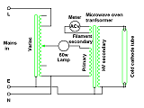
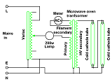
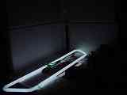
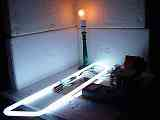
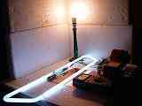
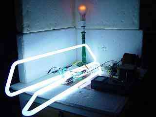
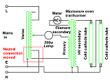

|
|
High voltage. By Lee Davison. |
|
Lighting up.While wandering through the shopping centre recently I saw that one supermarket was closed and was having a refit. On the way back to the car I passed a young lad with a hammer making all the tubes from the shop's sign fit in a small plastic bucket so, not being one to pass up the chance to scrounge something, I asked if I could take a couple. "Yeah", says lad with hammer, "take what you want". So I did.
 The circuit.So now I have two cold cathode tubes, both sixty something inches long and I want to make them light up. A search of the web produces a few promising leads but nothing that doesn't involve building something moderately complex that may not work. I did find a microwave oven transformer and, with the tube wired across the high voltage secondary, got some flickers out of it by momentarily connecting a 6 volt battery across the heater winding.
Pondering how to drive this transformer, just plugging it into the mains is not an option, I stumbled across a Variac. I knew I shouldn't have left it at the top of the stairs, good thing I was on the way up. With this, and an old bedside lamp as a current limiter, I knew I could get this working.
 More power Egor!The circuit is a fairly simple thing. The variac is wired to give 0% to 110% of the input voltage at the variable output. The output from the variac is connected to the sixty watt 240v bedside lamp and from there on to the primary of the microwave oven transformer, the other end of the primary returns to the neutral on the Variac. The tube is wired directly across the high voltage secondary, one end of which is earthed. A meter set to AC volts is connected across the filament secondary, this is to give some idea of the voltage across the tube.
On powering the tube flickers even before any glow is visible from the lamp. Turning up the volts the tube and the lamp both get brighter until at 100%, about 240 volts, the reading on the meter flattens out to about one and a bit volts. With the turns ratio of the secondaries this works out to about 600 volts across the tube.
After a while the voltage can be turned down without the tube dimming much, even at 50% the meter still reads over a volt, and this suggests that the tube is behaving as an almost constant voltage load.
   About 20% voltage and the tube will strike but won't stay lit and flickers badly.
About 50% voltage and the tube stays lit without flickering.
About 110% voltage and the tube is not much brighter, unlike the lamp.
I did try this circuit out on a neon sign I have but it never struck, even with everything cranked right up. The meter read 1.9 volts which is somewhere over a kilovolt on the high voltage secondary but no joy. Now where did I put that trippler?
Not satisfied with just one tube lit I connected both tubes in series across the high voltage secondary but the bulb was glowing well before the tubes struck and, even at 110%, the output was disappointing. Time for more power.
 Egor! More power!Hunting round the house eventually turned up a 200 watt lamp and this replaced the 60 watt lamp previously used. While swapping the lamps a note was made of the "60W MAX" sticker on the lamp socket, but the lamp is not going to be running flat out in this application.
This time the series connected tubes lit well before the lamp showed any signs of glowing and both were fully lit by about 80% voltage. Turning the output all the way up to 110% didn't make a lot of difference, as happened with the single tube, with the meter reading about 1.8 volts the whole time, that's about 1Kv across the pair of tubes.
One small change and it becomes possible to increase the variac maximum output from 110% to 120% of the input voltage. The disadvantage is that the neutral input and output are now at different potentials, the advantage is even more power.
| Last page update: 6th September, 2005. | e-mail me
 |